Unity: 2D Action RPG
Inspired by games like Legend of Zelda and Eastward. Scroll to view the unique implementation of various systems.
(Please Check My GitHub Repository for Code Specifics)
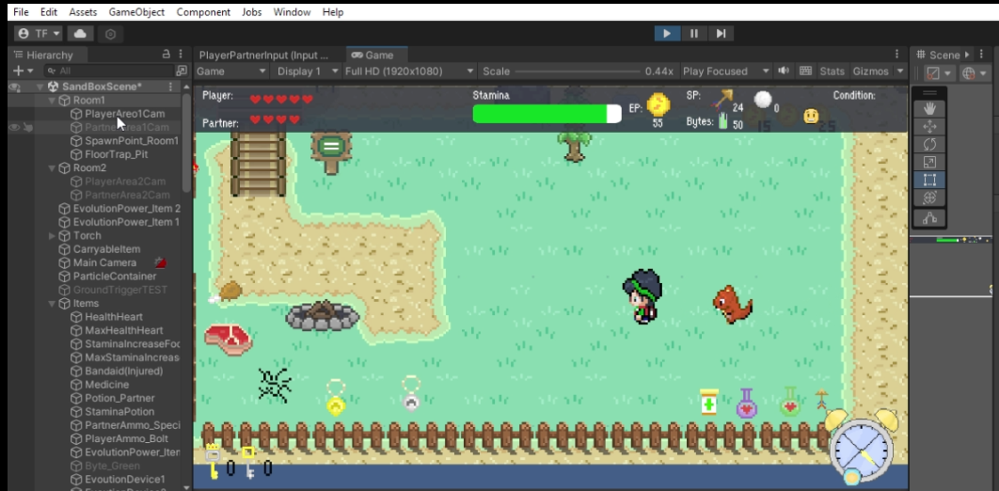
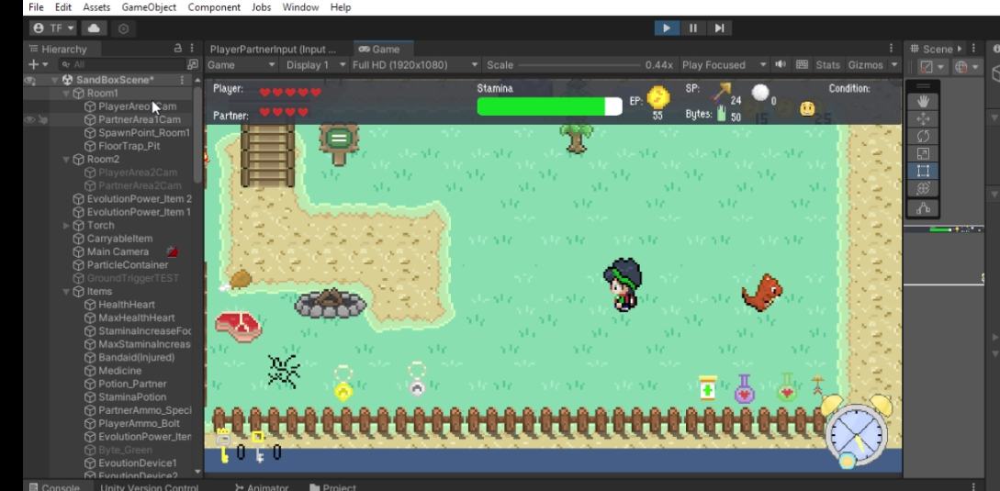
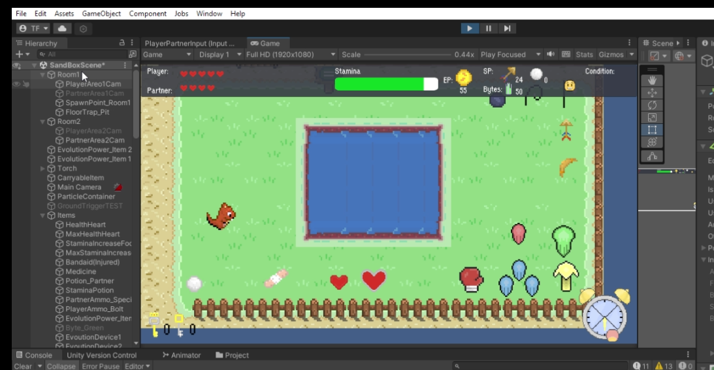
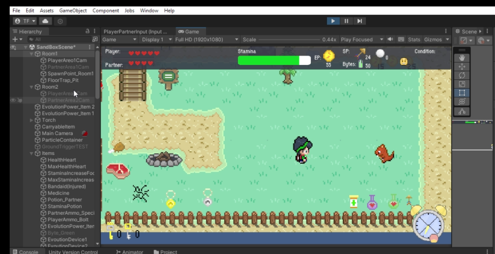
CUSTOM CAMERA SYSTEM
- I created a custom cinemachine camera system for dynamically following the human or monster depending on the Player’s current control.
- In these screenshots, notice the Game Objects in the top of the hierarchy. The Room1 and Room2 Game Objects hold the individual cameras. Each room has two cameras, representing the characters they are assigned to.
- The Room Game Object sets the size of the room via a confiner polygon collider.
- As seen in the images, the individual camera’s will be set to active or inactive depending on who the player is controlling and which room the currently active player is in.
- This system utilizes a camera helper class and dynamic reference to the active camera in the Player and Partner scripts for setting the current active camera.
- Previously assigned cameras are set to inactive upon leaving each room, replaced by the correlating camera in the newly entered room.
- The system discriminates when the monster character is being played by receiving information from the Monster’s state classes. I.e. the ‘partner camera’ won’t be active if the game player is not currently controlling them.
- The two playable character have the ability to be in separate rooms and the camera system transitions to and from them seamlessly.
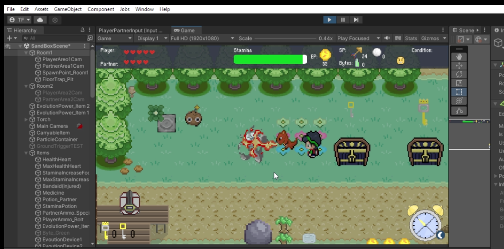
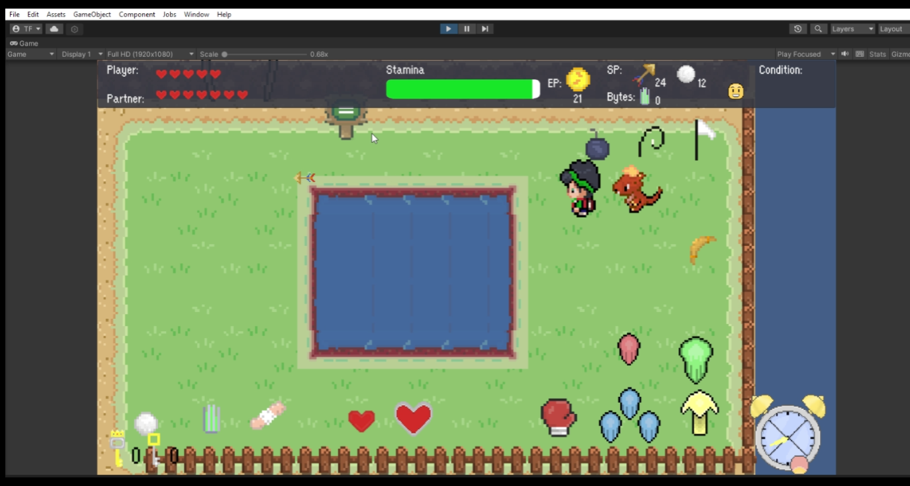
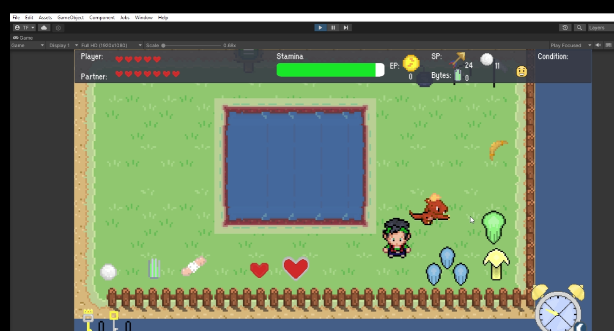
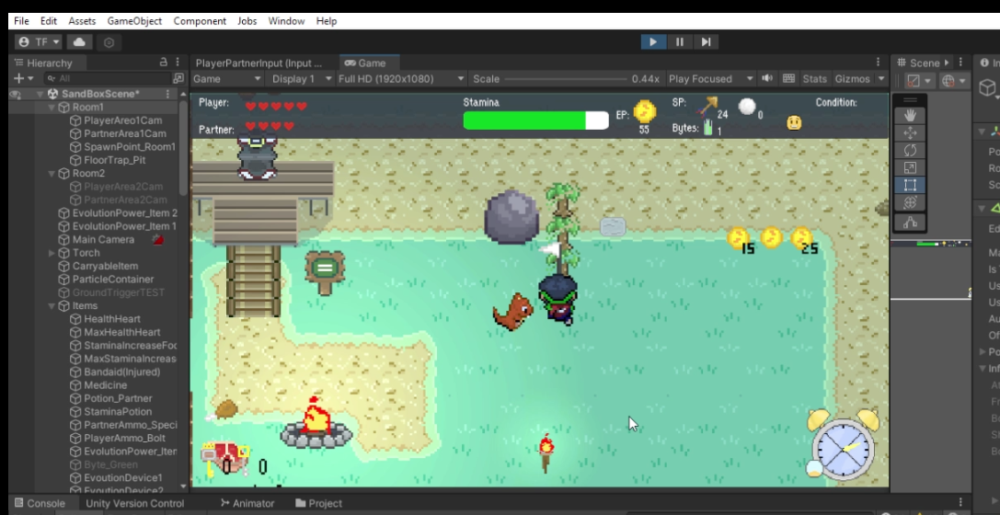
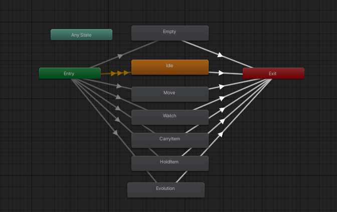
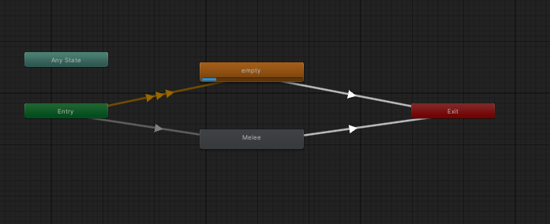

 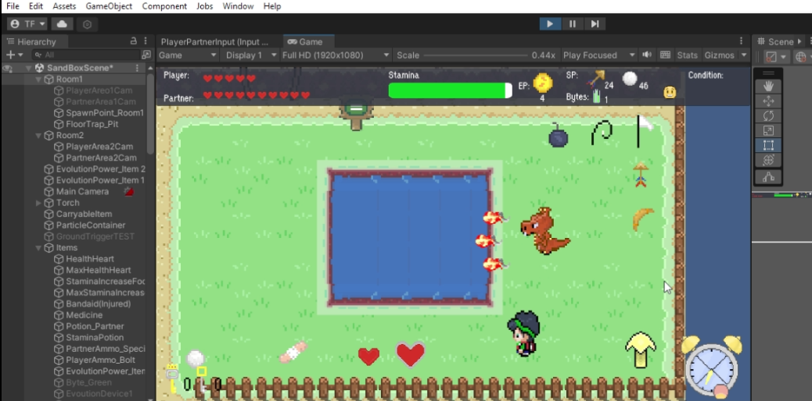
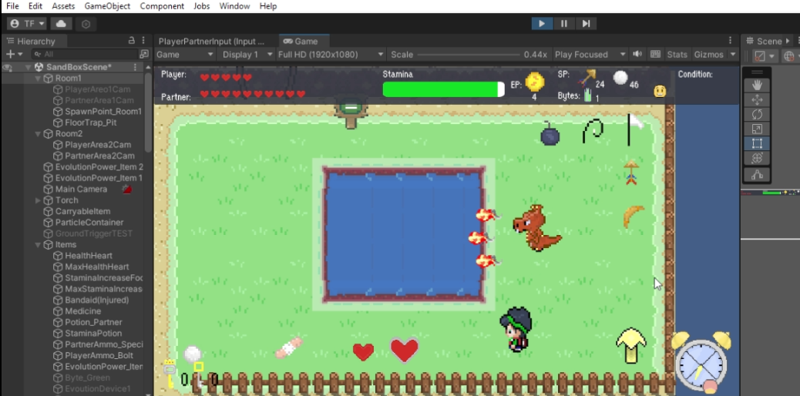
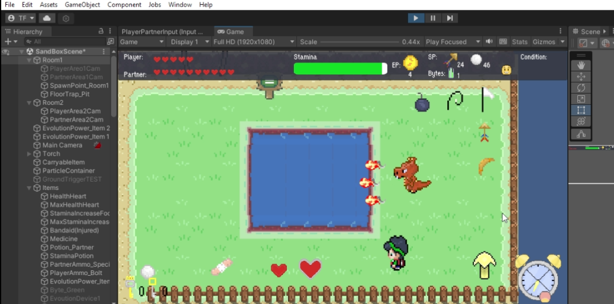
Limitless Weapon Components! Damage, Knockback, and Poise.
- I created a robust and expansive weapon system, featuring the use of ‘weapon components’ that allow for individual attacks to be customized with varying behaviors. Utilize component pattern, MVC pattern, Object pooling, Observer pattern.
- For this game, weapons are seperated into two genre’s ‘melee’ and ‘projectiles.’
- The weapon class monobehavior works as a manager for assigning and implementing the weapon features and individual behaviors. It is attached to the primary and secondary weapon game objects to allow for versatile assignment of two different attacks
- I used scriptable objects to hold weapon specific information for a feature of that weapon.
- Each weapon component needs three types of classes: :
- Attack data
- 'Individual' component
- Weapon data
- Weapons (Scriptable Objects) can hold any number of needed data:
- Animator Controller
- Anything needed by a 'weapon'
- Allows for advanced weapon swapping system by essentially plugging the desired weapon scriptable object into the Weapon Generator class and running a function that sets that new data.
- Works in coordination with weapon inventory system (a separate scriptable object) that contains information for the visual representation and description of a weapon but also has the ability to communicate to the Weapon Generator class via a mediator pattern.
- An Intricate use of Abstraction through interfaces and abstract classes is present in the weapon components. This allows for a similar process of creating a weapon component while allowing for customizable functionality.
- Custom editor scripts are implored for easier accessibility and assignment of weapon components.
- Animation events are used to create precise functionality with what is represented visually to the user
- Works in coordination with the character's state machine:
- Upon player input, character enters 'attack state'
- Attack state activities primary or secondary Game Objects
- Allows for advanced weapon swapping system by essentially plugging the desired weapon scriptable object into the Weapon Generator class and running a function that sets that new data.
- These objects handle all attack behaviors, including animations, allowing for visually appealing and decoupled animator controllers
- Makes for a clean, easy to follow Animator Controller. (See Image)
- Projectiles are a component attached to a weapon scriptable object.
- That component holds the ability to assign a projectile type, communicate via observer pattern to the projectile's object pooling class, and pass behavior specific data to that projectile.
- This is a decoupled, performant, and modular approach to projectiles.
- Uses Enums as class identifiers and abstraction through the use of classes that define the key value pairing of projectiles and their respective prefab to be pooled.
- Projectiles have individual classes that define and implement their behaviors by receiving information from the projectile component.
- Essentially, projectiles are separate from the weapon class and components, but can be ‘called’ and ‘set in place’ by a weapon component as dictated by the user.
- Neither the projectile, nor the weapon component are aware of each other. This allows for an expansive system with straightforward implementation.
-
Boomerang:
- Thrown in 1 0f 8 directions.
- Travels a variable distance and returns to point where it was thrown.
- Capable of interacting with poise interface, applying stun damage to an enemy.
- Can return designated items to the player and interact with particular switches.
-
Scythe:
- Tool that cust shrubs blocking access to items and paths.
- Utilizes ICutable interface upon detection within the Weapon Component 'Action Hit Box'.
- CheckHitBox() is called from the animation event within the weapon's Animator Controller.
-
Whip:
- Applies Knockback to enemies.
-
Dart:
- Applies ranged stun damage to enemies.
-
Bomb:
- Detonates on a timer.
- Applies Damage to anything within its radius.
- Interacts via the IBombable interface.
-
Basic Projectile:
- Shoot a basic projectile in 1 of 8 directions.
-
Melee:
- A quick, short range attack.
-
Elemental Attack:
- A primary attack that can be used in place of the melee.
- Slow to execute, but deal lots of damage.
-
Charged Projectile:
- Hold to charge.
- Animator signals when charge required has occurred.
- Projectile component receives data, and sets the charged projectile to be fired.
- Inflicts twice the damage, knockback, and stun of a regular projectile.
-
Spread Projectile:
- Shoots 3 basic projectiles at once.
The Versatility of the system
Player Weapons and Tools
Partner Attacks and Projectiles
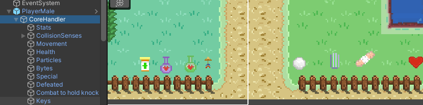
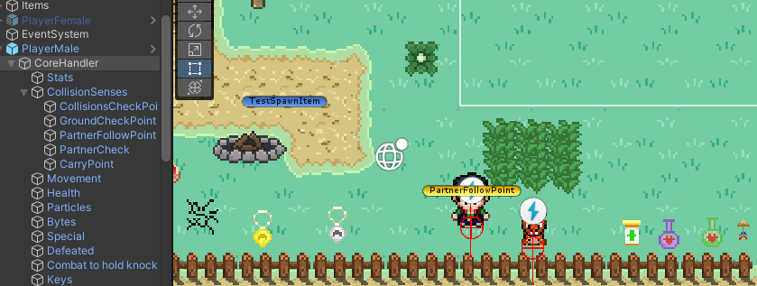
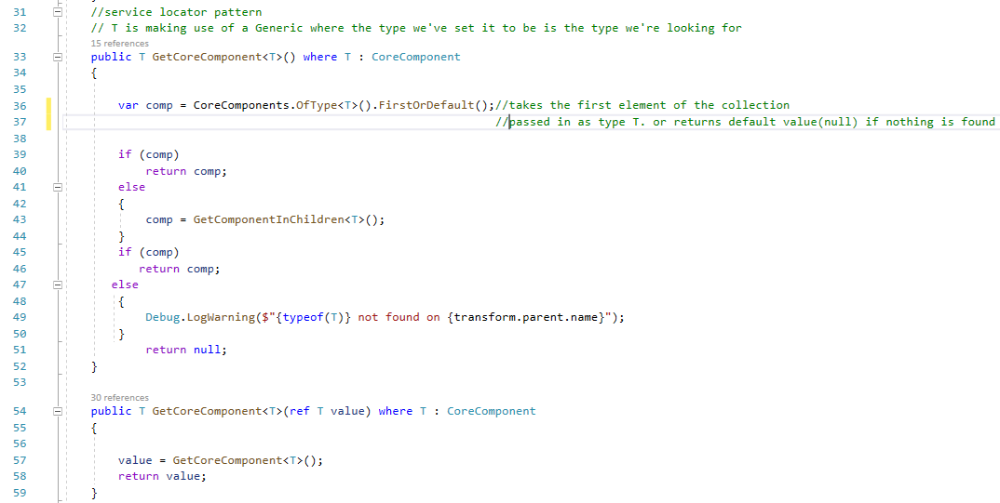
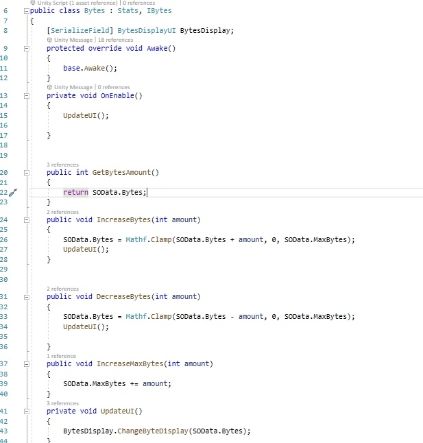
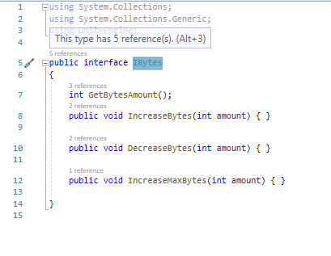
Service Locator Pattern:
Stat Class Example:
Bytes Interface Example:
CORE COMPONENTS
- Created a straightforward system of classes that hold individual and customizable functions, data, colliders, raycasts, etc. needed by character classes.:
- e.g. Movement, collisions detection, stats, defeated, particles, etc.
- This system is able to work with the character's individual state classes via constructor dependency injection at initialization. The reference comes from the 'Player' monobehaviour class that sets reference to the core components through the CoreHandler class.
- Each component derives from a base class called core components
- The CoreHandler is responsible for retrieving the references and setting them with a Service Locator Pattern (SLP).
- The SLP can be accessed by the different Player states due to the dependency injection from the constructor.
- The SLP utilizes a generic function of type CoreComponent (the deriving class for all components), and allows any component to be retrieved as long as there is access to the CoreHandler class.
- e.g. The collision class is accessed by the player move state to check information from a raycast to determine if it is in contact with a condition that will change its state. E.g. detecting a carryable object.
STAT CORE COMPONENTS
- Created a stat system of core components that account for all types of stats i.e. Health, Stamina, MP, Evolution Points, Keys, sick, injured, Bytes
:
- Each stat component derives from the Base 'stat' class.
- A character does NOT have to implement all stat components. It can only have the ones it needs and because they derive from the base stat class, the service locator pattern can still access them for use by the player’s state machine.
- This gives them access to common functionalities as defined by the stat base class.
- The purpose of the individual stat classes is to function as a HUB for game objects to facilitate interact with player data. If Player data is to be changed, it must be done through the respective stat class.
- Stat classes also account for congruency in player data.
- They are responsible for triggering ‘stat events’ events found in scriptable objects that can be subscribed to to let systems know health is at zero, or stamina meter is empty.
- Each stat class has its own interface implementation, and holds the required functions to make that stat accessible by other game objects. I.e. hearts, meats, ammo, detrimental items.
State References
State Machine
Individual State Example (super state)
Player State Machine
- Developed a state machine pattern with the ability to maintain player behaviors, data, and interactions.
- Utilize: Constructor, dependency injection, State Pattern, Observer Patterns, abstraction.
-
Three main classes involved:
- PlayerState, StateMachine, Player.
- Classes that derive from PlayerState can change to and from each other based on conditions by sending desired state’s reference. Deriving states have access to this process from initialization in the Player State class. Generating the constructor and overrides allow them to connect efficiently.
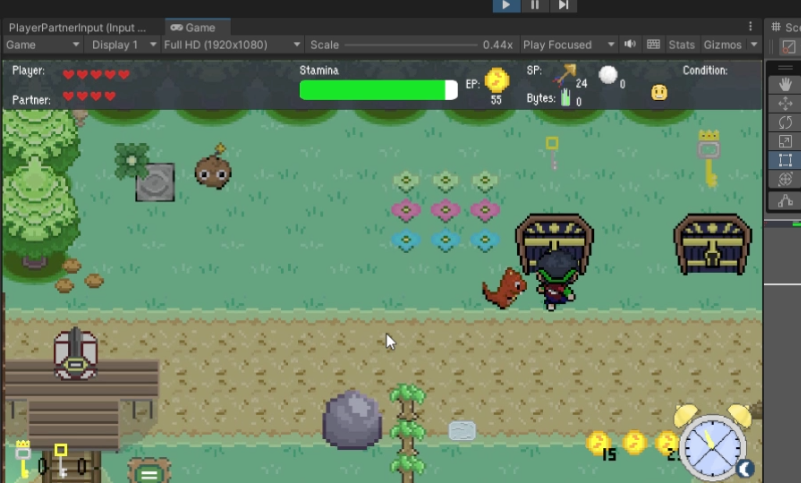
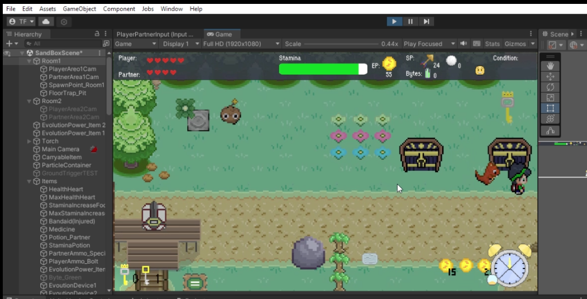
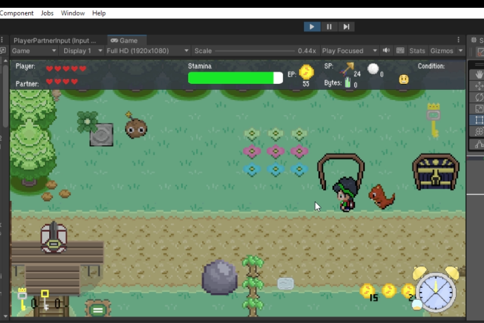
Dynamic Key System
- There are two types of keys:
- 1. Regular Keys
- 2. Boss keys
- Keys are part of the STAT CORE COMPONENT ***(see Above)
- The individual data is stored in a scriptable object referenced through that component's instance.
- The only way to change the data is by going through the IKeys interface.
- The interface is called by the Key Door class and checks to see how many keys the player is holding of the required key type.
- The Key Door is responsible for defining the amount and type of key(s) to open and executing desired behavior if conditions are met.
- If the KeyDoor class finds the player meets the requirements, it subtracts the defined amount of keys from the Player’s data. I.e. The Key class receives this information and applies it to the UI and scriptable object (Player Data) as seen in the images.
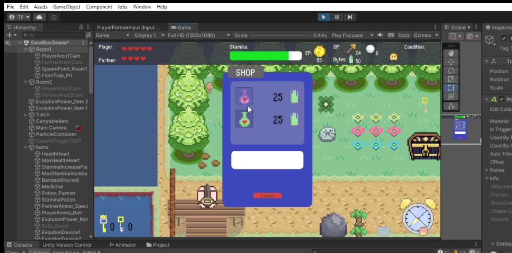
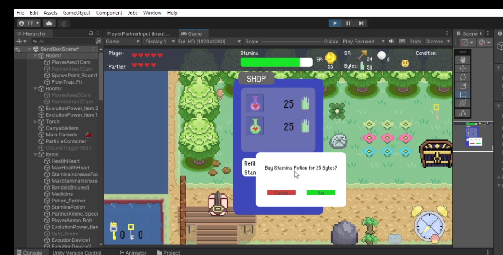
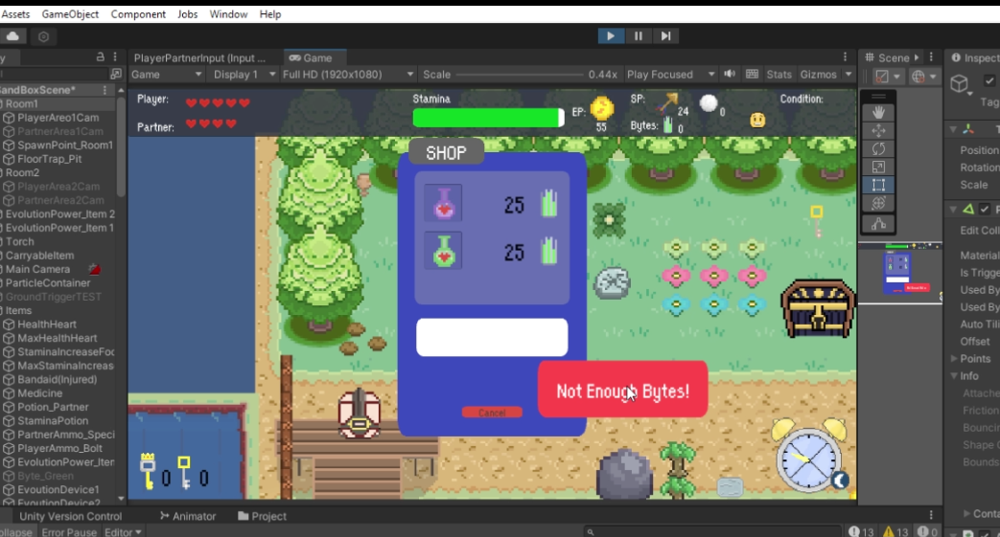
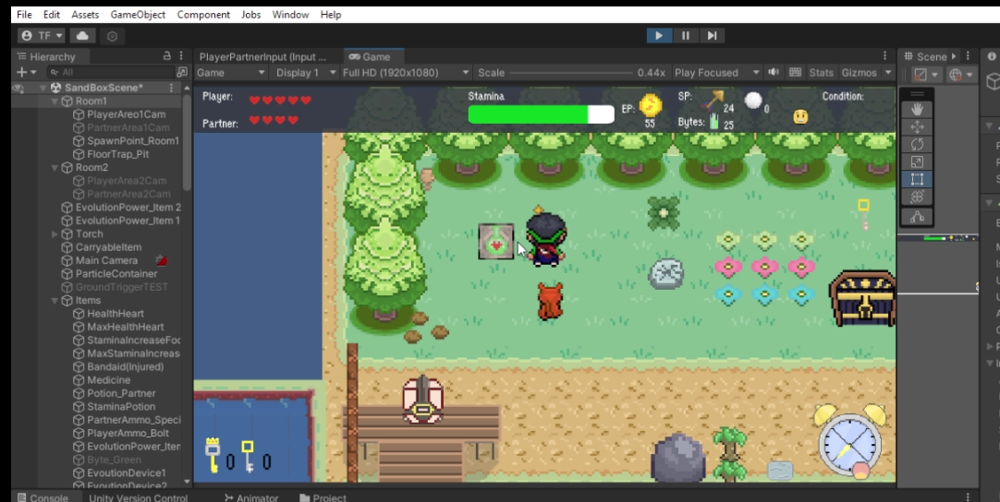
SHOP SYSTEM
- Created a shop system with merchant who sells a regular stock of items i.e.(potions, hearts, meat etc.) but also has the capability to sell a special, single-purchase item i.e.(a key item or weapon)
- Use scriptable objects to define item-specific details. I.e. how many in stock, description, name, prefab to instantiate.
- MVC pattern similar to Weapon and Inventory systems listed above.
- Controller (ShopManager) class handles logic by receiving information from the model and View, then executes desired functionality.
- Bytes(in-game currency) are checked by the shop manager, via interface, then subtracted from player’s inventory if the minimum cost requirement is met.
- ShopManager also takes care of signaling to the View that the player does not have enough currency, and Bytes are not subtracted.
- If currency is greater than or equal to the item, the purchase will be made and the item will spawn next to the shop keeper for the player to pick up. This makes use of the system already in place for picking up items, and allows for the shop to have a greater variety of items like hearts and meat, which are overworld exclusive items and not inventory items.
 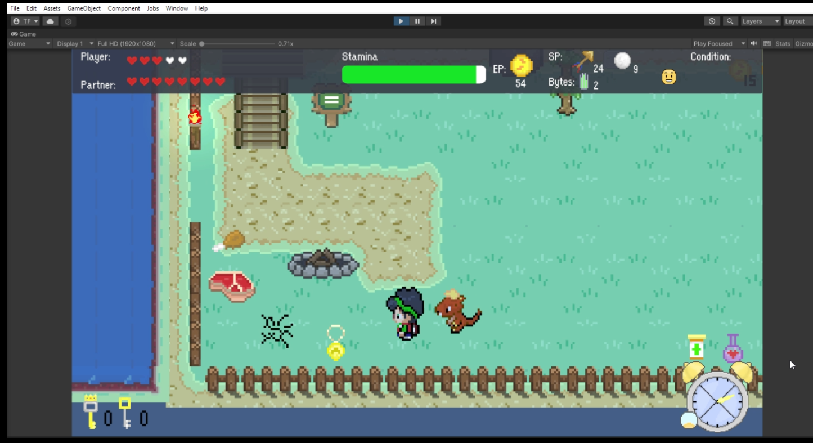
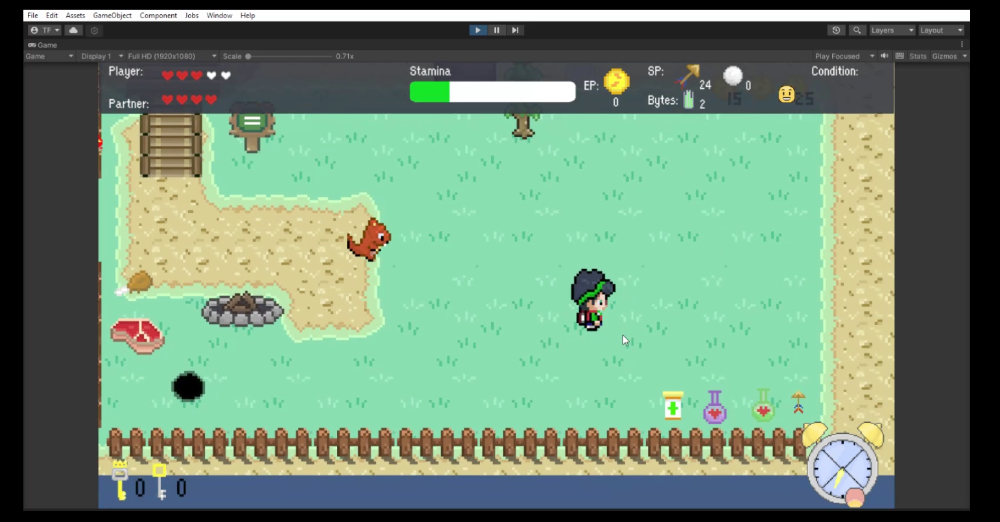
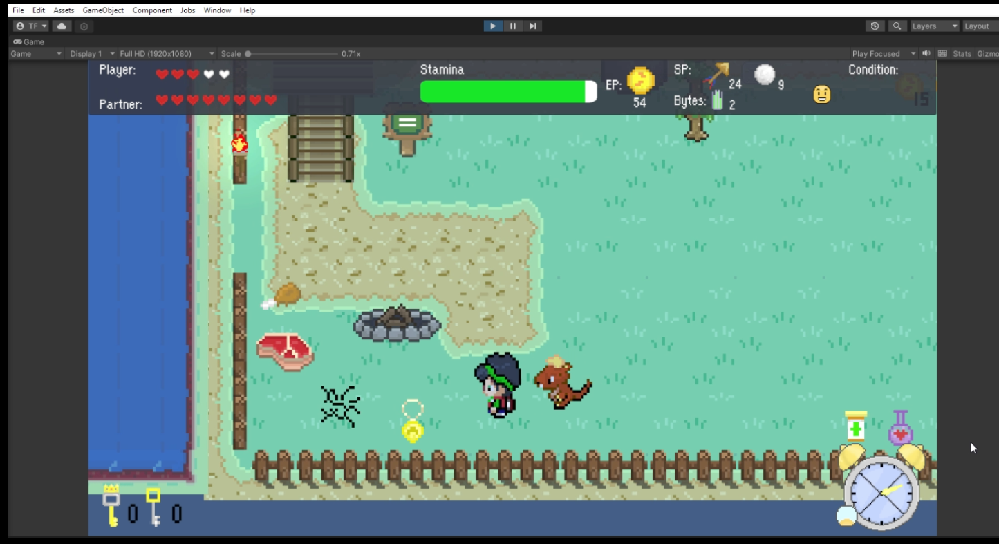
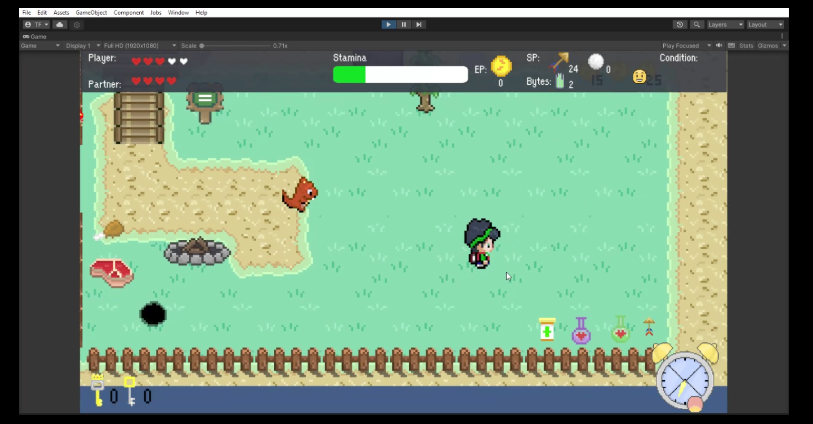